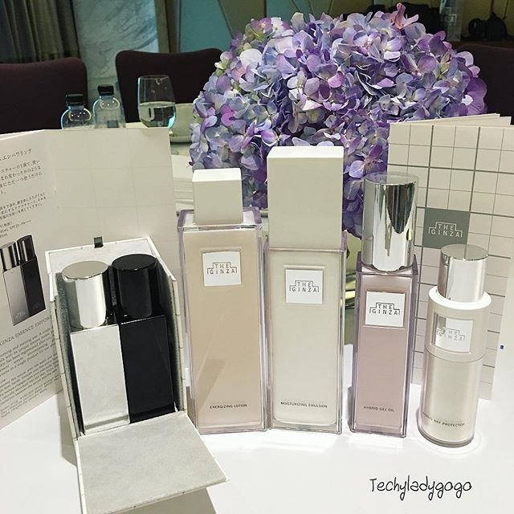
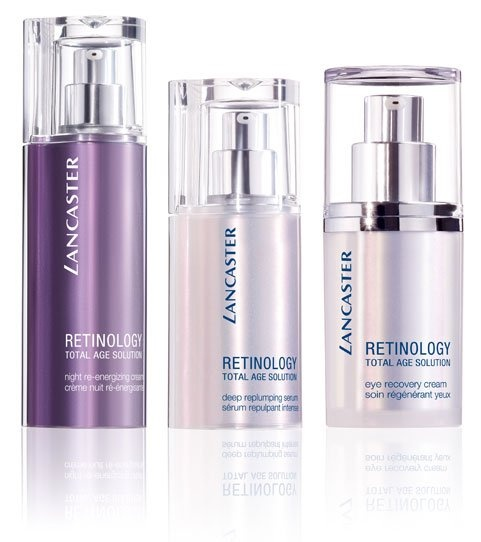
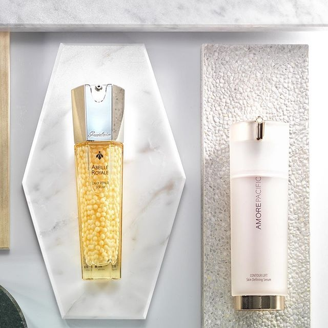
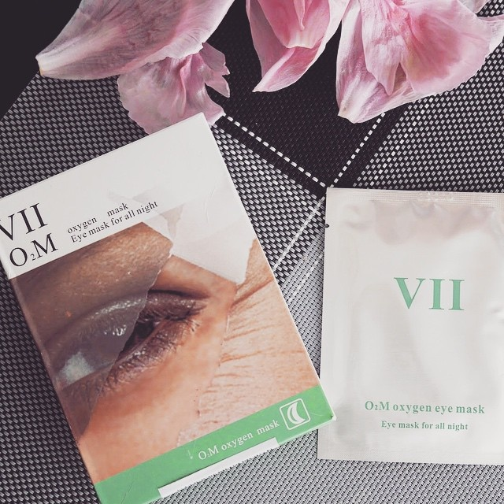
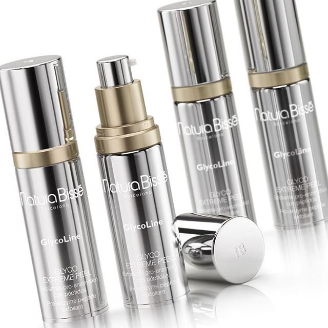
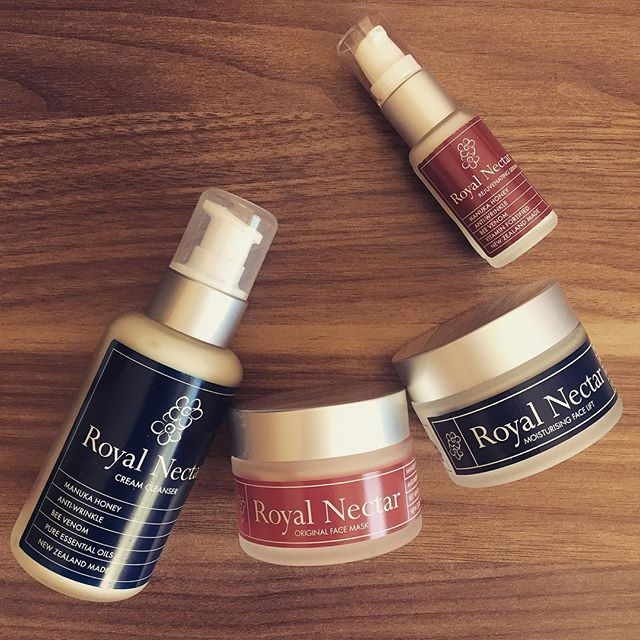
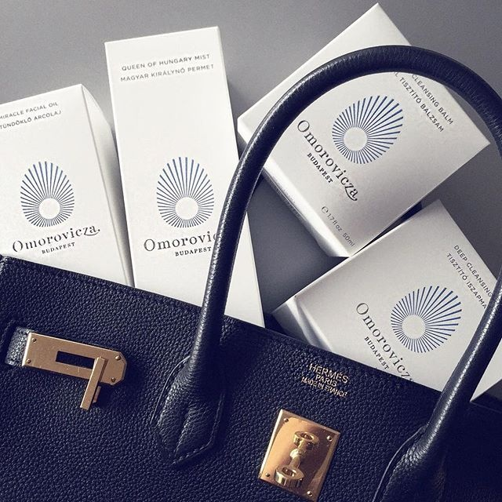
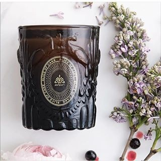

扒一扒各国皇室美人们都在用什么...
好奇心是女人的天性，所以……今天我们要来扒的是，那些高、大、上的皇室御用妆品。
日本皇室：THE GINZA

资生堂隐藏大BOSS: THE GINZA 银座系列，最初是针对日本皇室研发的。THE GINZA看似简单的八件单品凝聚了资生堂最顶级的保养科技。
摩纳哥王妃：Lancaster

1970年，兰嘉丝汀(Lancaster)为摩纳哥格蕾丝王妃量身定做专属护肤、彩妆系列，正式成为摩纳哥皇室御用护肤品牌。近半个世纪过来，照旧深得摩纳哥皇室钟情。
欧洲皇室：娇兰

在1828年，身为医生和药剂师的法国青年开创造了“法国娇兰”品牌，并在巴黎Rue de Rivoli开设了第一家店。一个关乎全球美容界的美丽传奇自此展开，并在以后的岁月里，不断地演绎出令人惊喜震撼的美容佳作，也就此展开了与欧洲皇室的悠远渊源。
约瑟芬皇后：VIICODE

据说，美容配方VII CODE是奥地利国王作为礼物敬献给拿破仑的约瑟芬皇后，年过半百的约瑟芬使用神秘配方后竟变得比自己的女儿还要年轻，创造了“不老的神话传说”。
西班牙皇室：Natura Bisse

Natura Bisse曾只为西班牙皇室提供。因为高昂的价格，那时只有好莱坞的名人消费的起而从好莱坞传播出来，直到现在全球的消费能力增长到承受的住，Natura Bisse的皇室奢华才开始扩展蔓延。
英国皇室：Royal Nectar

Royal Nectar蜂毒面膜因英国皇室钟爱而声名大噪，相信应该有许多美妞用过，来来来，快来分享一下拥有皇室同款的感受~
匈牙利皇室：Omorovicza

匈牙利皇室顶级保养品牌，omorovicza的深层清洁面膜是其明星产品，多次获得清洁面膜大奖，非常温和，极其敏感的皮肤和孕妇都可以使用。
泰国皇室：Panpuri

泰国皇室御用第一品牌Panpuri是泰国SPA产品中的顶级产品，从洗发水到面部化妆水、润唇膏 ，还有身体乳、按摩油 、冲凉液 ，以及手脚用磨砂、指甲润手乳等都有。很多五星级酒店包括Mandarin Oriental 、Four
Seasons 、Conrad 或者Sukhothai内的Spa都指定用它提供各式疗程 。
皇室同款什么的，我就静静的围观就好...卖俩儿肾才买得起的面霜什么的，我一点也不（mai）想（bu）要（qi）呢